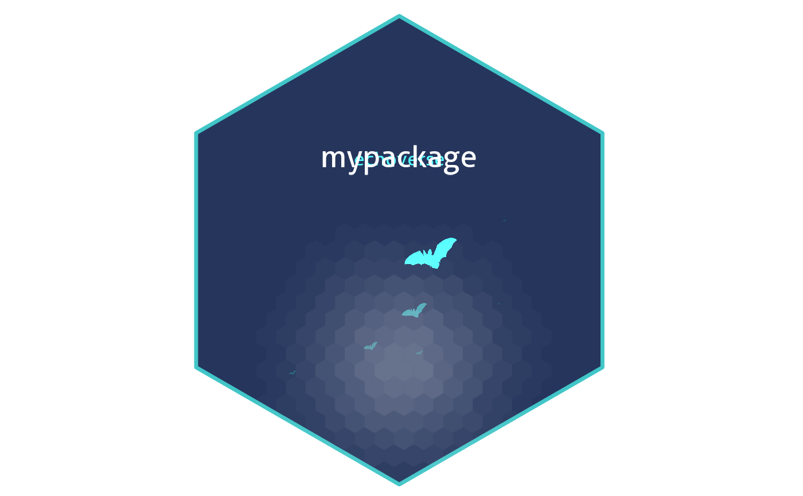

Make a hex sticker for the echoverse.
Usage
make_hex(
pkg = read.dcf(here::here("DESCRIPTION"), fields = "Package")[1],
subtitle = "echoverse",
subplot = NULL,
save_path = here::here("inst", "hex", "hex.png"),
new_coords = FALSE,
n_bats = 20,
gradient = c("#194f68", "#56ffff"),
p_size = 14,
p_x = 1,
p_y = 1.4,
s_size = 1,
s_x = 1,
s_y = 0.8,
s_height = s_size,
s_width = s_size,
h_fill = "#25355c",
h_color = "#41c6c8",
spotlight = TRUE,
l_alpha = 0.3,
l_width = 10,
dpi = 300,
seed = 1234,
show_plot = TRUE
)Arguments
- pkg
Package name.
- subtitle
Hex sticker subtitle.
- subplot
subplot
- save_path
Path to save the hex sticker to.
- new_coords
Generate new random x/y coordinates to position the bats in the background along.
- n_bats
The number of bats you want to plot in the background.
- gradient
Two colors to use to create a gradient for coloring the bats.
- p_size
font size for package name
- p_x
x position for package name
- p_y
y position for package name
- s_size
Convenience argument for controlled both
s_heightands_widthat the same time.- s_x
x position for subplot
- s_y
y position for subplot
- s_height
height for subplot
- s_width
width for subplot
- h_fill
color to fill hexagon
- h_color
color for hexagon border
- spotlight
whether add spotlight
- l_alpha
maximum alpha for spotlight
- l_width
width for spotlight
- dpi
plot resolution
- seed
Random seed to make point coordinates reproducible (only relevant when
new_coords=TRUE).- show_plot
Print the plot once created.
Value
Plot of class sticker.
Examples
hex <- make_hex(pkg="mypackage",
save_path = tempfile(fileext = "hex.png"))
#> Loading required namespace: hexSticker
